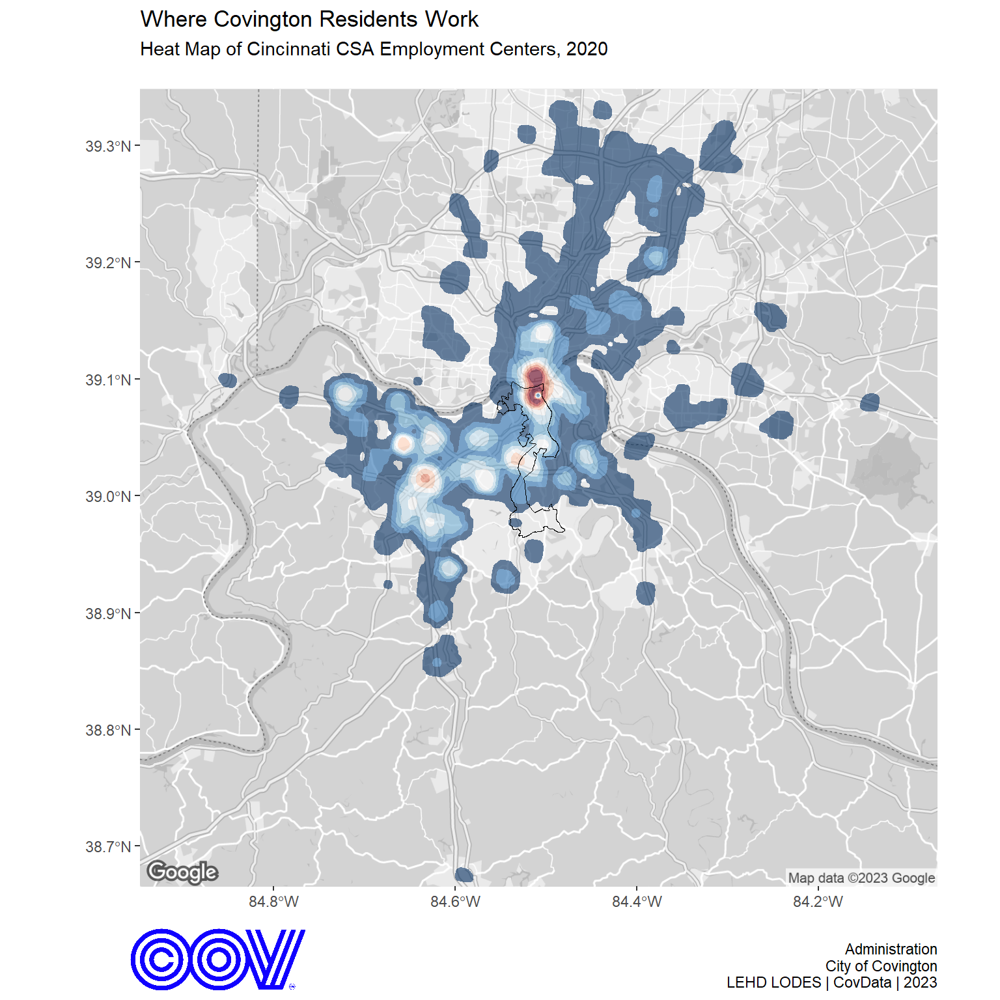
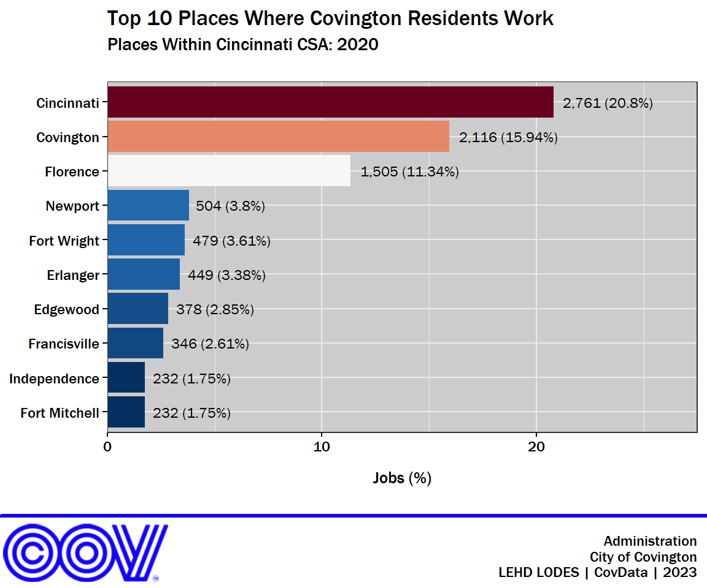

The Longitudinal Employer-Household Dynamics (LEHD) program is part of the Center for Economic Studies at the U.S. Census Bureau. The LEHD program produces cost effective, public-use information combining federal, state and Census Bureau data on employers and employees under the Local Employment Dynamics (LED) Partnership. State and local authorities increasingly need detailed local information about their economies to make informed decisions. The LED Partnership works to fill critical data gaps and provide indicators needed by state and local authorities.
Under the LED Partnership, states agree to share Unemployment Insurance earnings data and the Quarterly Census of Employment and Wages (QCEW) data with the Census Bureau. The LEHD program combines these administrative data, additional administrative data and data from censuses and surveys. From these data, the program creates statistics on employment, earnings, and job flows at detailed levels of geography and industry and for different demographic groups. In addition, the LEHD program uses these data to create partially synthetic data on workers’ residential patterns.1
This post looks briefly at where Covington residents work within the Cincinnati-Wilmington-Maysville Combined Statistical Area (CSA) using the most recent LEHD Origin-Destination Employment Statistics (LODES) dataset for the year 2020. This dataset links home and work locations at the census block-level, making it easy to answer questions about where people work and where workers live.
Heat Map of Employment
The heat map below displays the distribution of jobs held by Covington residents within the Cincinnati-Wilmington-Maysville CSA. The City of Covington boundary is shown in black for reference. The heat map can be intererpeted as follows from red to blue:
- red = higher concentration of jobs
- blue = lower concentration of jobs
It is clear from the map that downtown Cincinnati and Covington are the primary employment centers for Covington residents. There are several other notable employment centers in Northern Kentucky, including the Cincinnati/Northern Kentucky International Airport.

Top 10 Places of Employment
Within the Cincinnati-Wilmington-Maysville CSA there are 165 Places defined by the U.S. Census Bureau where Covington residents worked in 2020. These can be thought of as municipalities, cities, towns, villages, and boroughs. Within these 165 Places, Covington residents held 13,271 jobs in 2020. The top 10 Places were Covington residents had a job is displayed in the graph below. Cincinnati was the main Place of employment for Covington residents with 20% of the jobs within the CSA, followed by Covington (16%) and Florence (11%) in the top three.
